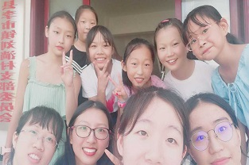
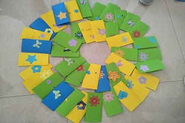
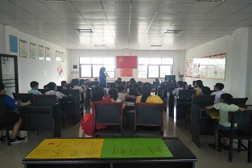
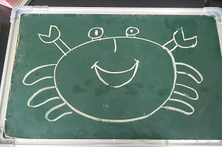

荆门支教之行
怀着复杂的感情，一个月的支教就这样结束了。心中既有终于能回家的欣喜，又有着对于班上可爱乖巧小孩子的恋恋不舍。但时针依旧不留情地划过，归途的高铁像个顽皮的孩子终于回到自己的工作岗位，周遭的景物在飞速地向后撤去，我知道我的支教月最终拉下了帷幕。
一、居住
和我所设想的艰苦生活不太一样，支教月的生活条件居然出乎意料的好：我们四个老师，虽然同住在一件屋子里，但衣箱、床头柜、温暖的大床、木地板、空调应有尽有。两个老师睡在床上，还有两个老师打地铺。阿姨家给的地铺不亚于日本的榻榻米，睡起来非常舒服。一日三餐都是清淡爽口的家常菜，阿姨的厨艺实在是令人赞叹。
天气炎热，我们四个在课后大多缩在房间里享受空调，只觉得酷暑之气都被吹走不少。“叩叩——”，敲门声响起，阿姨探头来慈祥的笑，端来一盘子西瓜：“我刚杀的西瓜，赶快吃吧！”话毕，我们谢过阿姨，分来西瓜围在垃圾桶旁吃，只觉得清冽可口。在一个月的相处之中，这样的场景重复了不知凡几。阿姨带给我们的，是家一般的慈祥与体贴。
吃过晚饭，四个老师都呆在房间里备课，或是聊聊天、看几部好看的电影等等。阿姨家的小男孩（也在我们班级上课）自从和我们熟悉以后，总会在这时候跑进房间，要么用稚嫩的语句和我们讲讲他的有趣想法，要么自顾自地打游戏。时间就在这样的平淡朴实的日常中悄悄溜走了。
二、环境
我所在的刘淌村整体自然景色是很美的。教学楼下有一个很大的操场，操场四周分布着不少娱乐设施，孩子们的课余大多在这里度过。晚上7、8点左右，已微微凉爽，天色又未完全被黑暗吞噬，刘淌村的大人便会在操场上跳起广场舞，有些可爱的小朋友也会挥舞自己的短胳膊、短腿学大人的模样跳起来，那个场景有趣极了。
操场对面是一片很大的荷花池。我们去的7月，正值盛夏。荷叶大把大把地张开自己的笑脸，荷花争奇斗艳地绽放。晚上随阿姨在村庄中散步，常会听到大人看着我们对小孩子说：“你看，你们的老师来啦。”小朋友扬起稚嫩的脸蛋：“老师好！”我们就在旁边，与小孩子玩耍，和他们的家长聊聊孩子的学习情况。沿途经过了一片很大的梨园，阿姨讲起小男孩钻进梨园偷梨的趣事。稻田一亩接着一亩，玉米长的又高又壮……我在这里真真切切地感受到了农家时光，体验到与城市不同的人生。
|  |  |
|  |  |
三、支教
支教月最重要的经历，自然与教小孩子们知识有关。这一个月，我从手忙脚乱、拿着讲课的话筒出虚汗，变成落落大方、哪怕不怎么准备也能口若悬河地把自己懂得的东西分享给小朋友，其间学到了不少教育孩子、为人处世的道理。
7月8日，正式开始招生。我们7点半就赶到办公室，却发现很多家长已经早早站在了门口。我暗暗吃惊，既对支持我们工作的家长表示感谢，又对自己能否管好这些小孩子提出质疑。这些小孩子，小的即将上一年级，大的准备上初中，年龄不同，性格不同，却都像一张白纸般纯真可爱。哪怕是现在回忆起来，一想到小朋友亮晶晶的大眼睛，就觉得心要融化了。
第一天上课，我们就遇到了极大的麻烦。低年级的小朋友在教室里面蹦蹦跳跳地玩耍，高年级小朋友则围在一起打扑克。有限的空间里挤下了48个小朋友，他们发出的喊叫声震耳欲聋。我询问了一个高年级的小朋友他们班级的管理模式，并试着把小朋友按年龄分成三组，然后分组座位。在耐心的管理下，班级安静下来。先是老师，再是学生依次开始介绍自己。低年级小朋友说了自己的名字，高年级的小朋友还会介绍自己的爱好与未来打算。总之在意外与波折中，结束了第一天的课程。
之后的日子里，我们总结了经验。除安全教育等必备课程外，尽可能多开音乐课、手工课、科学课等孩子们感兴趣的课程。在音乐课上，我们教小朋友们齐唱一首歌《苔》，孩子们惊人的学习天赋让人欣喜；手工课上，我们教小孩子们折盒子、折爱心，一个可爱的小女孩也教我折了信封；早读上，我们教小孩子读诗歌，学习诗歌带来的情感、也教他们念音标，学习简单的英语单词；科学课上，我们收集了不少小孩子们蛮有意思的问题，“长颈鹿的脖子为什么这么长”、“尼斯湖水怪真的存在吗”、“螃蟹为什么横着走”、“乌云为什么是黑的”、“在雨中奔跑淋的雨会不会少一点”，在这个过程中我们与孩子一同成长。
临近结班时，我们用卡纸、剪纸给每个小朋友做了一份独一无二的贺卡，上面写着四个老师对孩子真切的祝福。其中一个孩子的贺卡我至今仍记得最后一段：
希望这一个月的学习真正给予你收获，也愿你做一个永不失热忱的翩翩少年郎！
四、感想
在沙洋县刘淌村支教的这一个月，是我目前最长的一次志愿服务经历，也是我真正意义上的第一次实习。我得到了很多历练，也经历了不少挫折。
第一天报名时，看到许多家长热情的咨询，又看到小朋友们天真稚嫩的脸，我便开始期待这一个月的教学活动。每一次的趣味科学课上，小朋友一个个天真又有趣的疑问，向我们展现了他们丰富的内心世界。在备课时，我感觉自己渐渐变成了百科全书，和小朋友们一起成长。
当我因为水土不服而全身起疹子时，一想到孩子们的笑脸便觉得自己好多了；当小朋友分享给我他的奥利奥时，我觉得炎热的天气好像也变得清爽了；当我和小朋友们一起学唱儿歌《苔》、和他们一起玩跳棋时，时间就悄悄溜走了……
在支教的过程中，也遇到过不听话的小孩子，也碰到过棘手的矛盾，也见到过不讲道理的大人，但是在处理这一件件事情时，我们不仅增添了处世经验，更加深了彼此的情谊。我很感激支教让我多了三个如此知心的朋友。
支教之行结束了，我的志愿心仍在跳动。